Rekall agent whitepaper
This article was copied from the Rekall Forensics blog, posted by Michael Cohen on 2016-10-26. Copied with permission for historical preservation.
This post introduces the Rekall Agent - a new experimental IR/Forensic endpoint agent that appears in Rekall versions 1.6. The Rekall Agent will be officially released with the next major Rekall release but for now you can play with it by installing from git head using the following commands:
$ virtualenv /tmp/MyEnv
New python executable in /tmp/MyEnv/bin/python
Installing setuptools, pip...done.
$ source /tmp/MyEnv/bin/activate
$ pip install -e ./rekall-core/ ./rekall-agent/ .
The Rekall Agent
Security agents running on managed systems are common and useful tools these days. There are quite a few offerings out there from commercial offerings like Tanium or Carbon Black to open source offerings like GRR and OSQuery.
We have been developing and using GRR for some time now and have gained quite a bit of experience in designing and operating the system. GRR is an excellent system and works very well, but over time it has become clear that there are aspects of the system which are lacking or that GRR does not perform as well as it should.
I recently re-examined much of the feedback we received about GRR and tried to think about some of the issues involved with deploying and operating GRR at very large scale. In particular I am focusing on open source deployments, and the accessibility of GRR to new users and operators. As part of this exercise I have tried to reimplement or rethink some of the GRR design decisions in order to make a system which is better able to do what users want GRR to do. This is not because what GRR does is necessarily bad or that its design is flawed, but rather that we learn from the experiences we gained in developing GRR in order to build a better, more scalable and easier to use system.
Some of the common complaints I heard about deploying GRR is that GRR is very complex to run and deploy. There is the choice of which data store to deploy (with different reliability/scalability characteristics), front end load balancing and provisioning the right amount of front end and worker capacity for the size of deployment and the expected workload. When things get very busy in a large hunt the front ends tend to get overloaded and clients receive HTTP 500 errors (which makes them back off but this also makes them temporarily inaccessible). Typically if a large hunt is running, it is not possible to do targeted incident response.
I wanted to design a system focused on collection only. Most users just want to export their data from the system and so the system should just do that and nothing else. It should be scalable and easy to deploy.
These are the following goals I wanted to achieve:
- No part of the system should be in the critical path. The system should never deliver a HTTP 500 error to a client under any reasonable level of load. The client must never wait on any part of the system before completing its task.
- The system should be easier to deploy at any scale. From small to large deployments it should be easy for the system to be deployed with minimal training.
- The system should be able to do what users want from it. Users want to be able to do a full directory listing, they want to upload very large memory images. Users want to be able to search for a file glob in seconds not hours. Users want to schedule all clients in hunts in seconds not in hours.
- The system should be simple. A user should be able to find what they want from the system without understanding internal system architecture. They should be able to easily export or post process all data. The system should be discoverable and obvious without having to resort to reading the code.
- The system should scale well under load. If load suddenly increases the system should be able to handle it linearly (i.e. load doubles => processing times double). NOTE: goal 1 must be achieved even at high load.
- The system should avoid copying data needlessly as much as possible. Either data has to be written into its final resting place in the first place, or data should be virtualized from multiple locations when read by the user.
This document illustrates the experimental implementation dubbed the Rekall Agent. It should not be considered a replacement to GRR (there are some features that GRR offers, that have not been implemented yet) but it is a proof of concept in trying to implement lessons learned from GRR and improve upon the GRR tool.
In the following document I shall refer back to these goals and try to illustrate how the new design as implemented with the Rekall Agent solves these issues.
The Rekall Agent Design
In the following description of the Rekall Agent, I will compare and contrast many details with the GRR design. This will hopefully clarify the new design and illustrates why it improves on the GRR design.
The Rekall Agent is a collection system
I observed that most users do not perform much analysis in GRR, preferring to export their data to other systems. For example, users want to export data to timelining systems (such as Plaso or Timesketch) or to large scale data mining environments like Elasticsearch.
Therefore, to simplify the design of the Rekall Agent we state our primary goal is that of collection and not analysis. Rekall itself performs client side analysis (for example extracting signals from memory) but the collected data is simply made available for exports with minimal post processing by the Rekall Agent. As we see below a major design pattern is that data is uploaded directly to its final resting place by the agent leaving the batch processors to perform very limited work, mainly collecting high level statistics.
Everything is a file
In GRR everything is an AFF4 object. An AFF4 object is simply an object (it has behaviours and data) which is located in a particular URN or a path. For example aff4:/C.12345/vfs/os/Windows/System32/Notepad.exe is an AFF4 object containing information about the notepad binary on a specific client.
The Rekall Agent aims to simplify every aspect of the system, and what a better way to simply things than using the old Unix mantra of "everything is a file". Users understand files - they know what to do with them and because files are so convenient, there are already many systems designed and tested to process a lot of files, big and small.
In this regard Rekall is very similar to GRR - Files in Rekall are essentially the same as AFF4 objects in GRR. The client only knows and cares about downloading and uploading files. The server only knows about processing files within the filestore (e.g. the cloud bucket).
Let's look at a diagram of the Rekall Agent System:
The main components are the Rekall Agent which is installed on the thousands of systems being monitored, and the Agent Console used by the administrator of the system to control it. These two parts are connected via a shared file storage system such as a Cloud Bucket (For those users who wish to run their own infrastructure there is a stand alone HTTP file server they can run).
The Rekall agent operates in a loop:
- Read a jobs file on a web server (if it has changed since last time).
- Parse the jobs file for flows the client did not run previously.
- Run any new jobs. While the jobs are run, the client can upload files to the server. For example:
- A ticket is a small JSON file containing information about the currently running job. Tickets are read by various batch processors. A ticket can be thought of as a message sent by the client to the batch processor informing it of what it is doing.
- A collection is a single file that contains many results. It is basically a SQLite file with results.
Google Cloud Storage
Because managing files is such a common thing, there are commercial services already designed to store and serve files. An example of such a service is Google Cloud Storage which is essentially a service designed to serve and receive files at scale and with minimal cost.
By simplifying the design such that everything simply moves files around we can easily use such a commercial service. For the open source user this simplifies deployment immensely because they do not need to worry about running servers, capacity planning, outages and other mundane issues. Of course for those users who actually want to run their own servers this is alway possible (see below) but for those who do not, GCS is a perfect service.
Deploying Rekall Agent in the Cloud
Deploying Rekall Agent in the cloud takes three easy steps. First, create a new bucket to store your data:
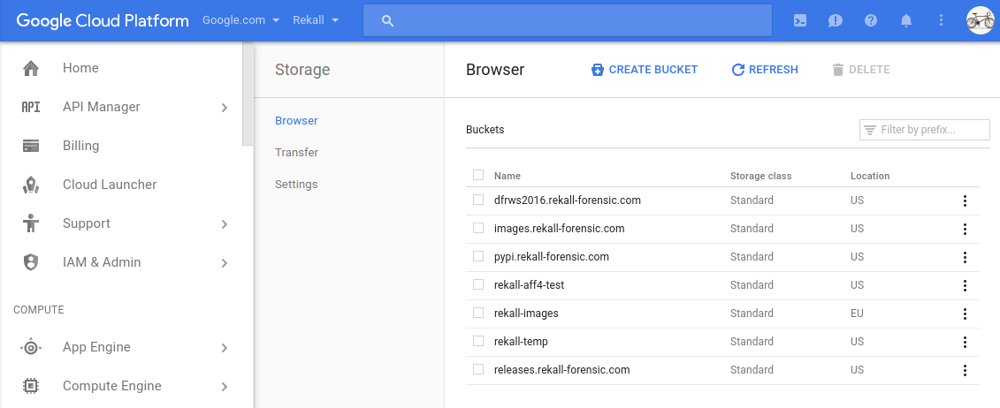
Next create a service account for the Rekall console to manage the deployment. The service account should have the Storage Admin role at a minimum. You will need a new private key which should be fetched in JSON format. Store the JSON file somewhere on your disk.
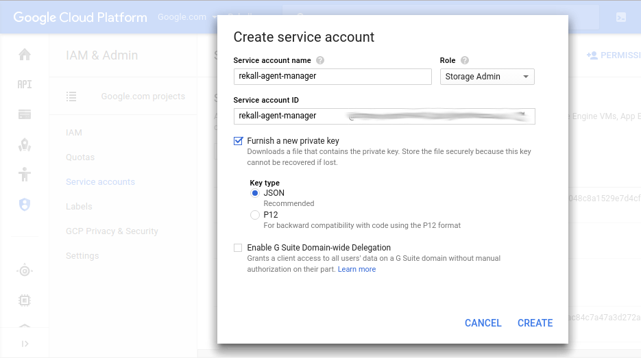
NOTE: The service account key controls access to the bucket. It is required in order to delegate upload rights to clients (which have no credentials) and to be able to view results in the Rekall Agent console.
Finally you will need to create a new config file for both clients and servers. The config files contain keys for both clients and server, as well as some basic configuration. The agent_server_initialize_gcs plugin creates everything needed to run on GCS.
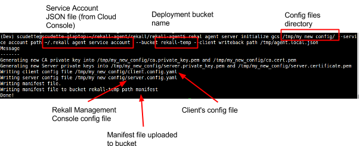
Now it is possible to run the agent client. Note that we do not need to deploy VMs, frontend servers, workers or anything really. The system is now completely set up and ready to go. We just need to install the Rekall Agents at the endpoints we want to monitor and point them at the correct config file.
Cloud storage cost model
Deploying a Rekall installation into a cloud bucket also gives predictable cost estimates. There are two types of chargeable operations made by the system:
- Polling the jobs files is a class B operation charged currently at $0.01 per 10,000 queries.
- A bucket listing operation is a class A operation charged at $0.20 per 10,000 queries. The agent worker issues one such request for each type of task it runs. In practice this cost is insignificant since the worker might only run batch jobs every few seconds.
- The charge per stored GB.
The dominant cost of cloud deployments is the client poll interval. Clients poll their own job file and at least one other (the All hunt file and their label file). So costs rise linearly with the total number of clients and their polling frequency and the total number of labels.
More frequent polling means more responsible clients (i.e. a job issued to a client might be collected sooner). An example cost calculation assumes clients poll every 600 seconds (10 minutes) on 2 queues. So 12 queries per hour is 8640 queries per month. For a 10,000 client fleet this will cost at least 86 USD per month (i.e. when the system is completely idle).
Obviously when the system is used to actively collect data costs will rise from there depending on usage. For certain deployment situations such a well constrained cost model is a clear benefit.
Deploying Rekall Agent on self hosted servers
Sometimes users prefer to deploy their own servers. There are some clear pros and cons:
Pros:
- All data remains on users servers and not stored in the cloud.
- For very large deployments there may be some cost advantage.
Cons:
- Users must maintain their own infrastructure including availability, scaling and reliable high bandwidth connectivity. Load balancing.
- Users must manage storage requirements. Ultimately this system writes files locally to disk so you need a large enough disk to hold all the data you will be gathering.
Nevertheless Rekall agent comes with its own HTTP server. To use it, simply initialize the configuration files using the agent_server_initialize_http plugin. You will need to provide an externally accessible URL for clients to connect.
Enrollment
The Rekall agent is a zero configuration agent. This means that there is no specific configuration required of the client before deployment. The client enrols automatically, generating its own keys, and unique client id. This process is called Enrollment.
Rekall simply performing an Interrogate action by itself without needing any server support. This means the Rekall agent is enrolled immediately and does not need to wait for the server. These are the Rekall agent's startup steps:
- When the Agent starts, it reads the Manifest file. This file is signed by the server's private key and verified by a hard coded CA certificate embedded into the agent's configuration file. This first step ensures that the bucket is owned by the correct controller (since it is assumed that only the possessor of the relevant private key can task the client).
- The Manifest file specifies some startup actions to be run on agent startup. By default the interrogate action runs on client startup.
- The Agent collects information about itself (like OS version, hostname, IP address etc) and writes a Startup ticket. The ticket is eventually post processed by the Startup batch job to collect high level information and statistics about the client.
- The client does not need to wait for the server. The client can simply go ahead and poll its own jobs queue (and any label based hunt queues) immediately and if there are any outstanding hunts the client will immediately participate in them.
This process can be seen in the following screenshot:
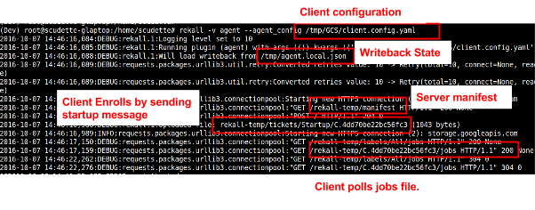
Note how the client polls several jobs files at once. The jobs files are termed Queues:
- The client's private jobs queue is located under its own client id in the namespace. This contains flow requests specifically directed towards a particular client (1-1 messaging).
- The client also polls a label related job (clients can carry several labels). All clients have the All label. Flows sent through these queues are directed at entire classes of agents (e.g. The All label is seen by all clients). This is how hunting is implemented. This is essentially a broadcast messaging system.
- Note that the client can request to receive the jobs file only if it has been modified since the last time it requested it (using the HTTP If-Modifed-Since header). This means the first request downloads the file, but any subsequent requests do not transfer any data and therefore have zero cost on client or server. This allows clients to poll very frequently without any additional system load.
Flows
In GRR, a flow is a state machine which sends requests to the client waiting for responses from the client, then sending more requests and so on. Processing of client responses occur at any time throughout the flow.
Rekall simplifies this approach by splitting a flow into only two phases. The first phase of a flow runs on the client, while the second phase runs on the server (We call this phase post-processing). The client's part of the flow runs multiple client actions, creating and uploading one or more result collections (see below).
Once the first phase of the flow is complete, the client writes a ticket to a specified location. The FlowStat job processor then launches the second part of the flow in the batch processor. This part of the flow primarily performs post processing on the client's result collection.
Rekall flows can be in one of the following states:
- Pending: The flow is waiting to be picked up by the client. It is written into the jobs file.
- Started: The flow is currently worked on by the client. A Started ticket has been written by the client and the client has proceeded to execute the flow.
- Done/Error (not post processed): The flow is complete by the client and the final ticket is written. In the case of an error the ticket includes a backtrace or error message.
- Done (post processed): Post processing of results are run (if required) by the Rekall Agent worker.
Note that it is impossible for the worker to delay the client from completing the flow. The client simply executes the flow and returns all the results when it is done. Even if the worker is completely stopped this does not affect the client in any way because the worker post processing is not in the critical path (See below for a demonstration). The worker is essentially a batch job which may run post processing on the results with no time constraints.
Running a flow
Let's take a look in detail at an example jobs file. A job file contains a JSON encoded list of flows. Here is an example of one such flow (Encoded in YAML for easy reading):
- __type__: ListDirectory
actions:
- __type__: ListDirectoryAction
path: /usr/share/man
recursive: true
vfs_location:
__type__: GCSSignedURLLocation
bucket: rekall-temp
expiration: 1475916267
method: PUT
path: C.4dd70be22bc56fc3/vfs/collections/usr/share/man/F_c18ec2cfb1
signature: |
a1POInGl2lBB4CRwcKyEC2QWeFMZs92XCw4Ibiih+hQs6bqykulKU8Kh+q/67UDdRgKy
XXXXXZrJBg==
client_id: C.4dd70be22bc56fc3
created_time: 1475829867.746249
flow_id: F_c18ec2cfb1
path: /usr/share/man
recursive: true
session:
__type__: RekallSession
live: API
ticket:
__type__: FlowStatus
client_id: C.4dd70be22bc56fc3
flow_id: F_c18ec2cfb1
location:
__type__: GCSSignedPolicyLocation
bucket: rekall-temp
expiration: 1475916267
path_prefix: tickets/FlowStatus/F_c18ec2cfb1
path_template: '{client_id}'
policy: |
ey5kaXRpb25zIjogW1sic3RhcnRzLXdpdGgiLCAiJGtleSIsICJyZWthbGwtdGVtcC90aWNr
VDA4OjQ0OjI3Ljc0ODc1MiswMDowMCJ9
signature: |
I1f0oyEssNRyn10kuvK0XMwom1Ee0IVRMzlulxK/7I4PrhDw5T7TGZvqC4AUEPqQQwSumn+
XXXXXybRerfc/KcEA==
status: Started
In the above example we see that a ListDirectory flow was issued. The flow contains a list of actions, the first of which is a ListDirectoryAction. The client will run this action (which recursively lists the directory specified in the path parameter). When done, the client will upload the result collection to the vfs_location specified.
The vfs_location parameter is of type GCSSignedURLLocation which specifies a method to upload files to the Google Storage Bucket named in the location. It also includes exactly the expected path within the bucket and a signature block which is enforced by the GCS servers. Note that this information grants the Rekall Agent client permission to upload the result collection to exactly the specified URL for a specified time. The agent has no other credentials on the bucket and can not read or write any other objects. It is only the flow's creator that (using their service account keys) can grant access to the named object.
Similarly the agent is given a FlowStatus ticket to return to the server when it begins processing the flow. The ticket contains a GCSSignedPolicyLocation location allowing the client to write the ticket anywhere under the prefix tickets/FlowStatus/F_c18ec2cfb1 .
So to summarize this section, we have seen that:
- Locations can specify different ways of uploading the file to the server. They also contain all the credentials required by the client to upload to a predetermined location. Since everything is a file in the Rekall Agent, everything deals with various Locations - so this is an important concept.
- Clients have no credentials by themselves, they simply do as they are told and use the provided credentials to upload their results.
- A client action is simply a dedicated routine on the client which runs a certain task, creates a result collection and uploads the result collection to the cloud.
Result collections
The concept of result collections is central in the Rekall Agent. Since in Rekall everything is a file, I was looking for a file based structured storage format, and the most widely known and recognized structured file format out there is SQLite. Using SQLite to store results is also reminiscent of the GRR SQLite data store, and we know that as long as any single SQLite file is not highly contended or it is not too large, then SQLite is a very good format. In fact, with the Rekall Agent architecture result collections are typically written once by the client, and then read multiple times by flow processors or the UI.
For example consider the task of storing a client's complete directory listing (e.g. in order to generate a timeline). On a typical client the directory listing is a few million files. Using a single deployment wide database will increase total row count by several million per client as discussed previously. If we keep the data in the large global table, that table will eventually grow and become slower as the system is used more and more.
However, Rekall creates a single SQLite file as a single result collection for one flow. This means that all the results from this flow are only stored in the one file. When the user wants to look at another flow, another database file will be used. This prevents the system from becoming slower as each SQLite database is isolated from all others, and it is only opened when the user explicitly wants to look at that specific result collection.
For example we can see the results of the ListDirectory flow above (using the view plugin):
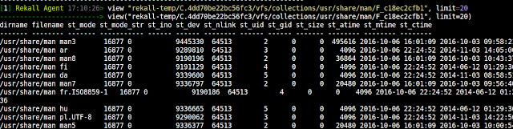
The result is simply an SQLite table populated and returned from the client, containing stat() information about every file in the requested directory.
Note that the Rekall agent prepares the result collection by itself, and then uploads it at once to the server. There is no need for a worker to do anything with it other than just noting that this collection exists (i.e. maintain metadata). Once the file is uploaded, the worker may or may not post-process it but the client is not kept waiting. Even if a worker is not running, an end user of the system can just download the result collection manually.
Customized result collections
It is usually the case that deployed clients are hard to upgrade. In any real deployment there will be a certain number of clients running older versions of the software, and test/deployment cycles are difficult to speed up.
For example, Suppose that after the clients have been deployed, an analyst wants to use an additional condition on the FileFinder() flow or maybe they want to retrieve an extra field that we have not thought of. Do we need to deploy a new version of the Rekall Agent to do this?
The answer is usually no. The Rekall Agent is very flexible and typically does whatever the server asks of it. We get this flexibility thanks to the Efilter library, which implements a complete SQL query system within the Rekall Agent.
Usually flows are written with the full result collection specification provided to the client itself, as well as an Efilter query to run in different situations. For example, consider the ListProcesses flow. There is no dedicated ListProcesses client action, instead the flow simply specifies a generic SQLite collection and instructs the client to store inside it the results from an Efilter query:
__type__: ListProcessesFlow
actions:
- __type__: CollectAction
collection:
__type__: GenericSQLiteCollection
location:
__type__: GCSSignedURLLocation
bucket: rekall-temp
expiration: 1475972560
method: PUT
path: C.4dd70be22bc56fc3/vfs/analysis/pslist_1475886160
signature: |
mngmDMUb337BfhgzTfpRGA0P0IgmpU5PD69S02F27FQGy3+706c2tfR+kJBlFuBdzb9Tj
XXXXXg==
tables:
- __type__: Table
columns:
- __type__: ColumnSpec
name: name
type: unicode
- __type__: ColumnSpec
name: pid
type: int
- __type__: ColumnSpec
name: ppid
type: int
- __type__: ColumnSpec
name: start_time
type: epoch
name: default
type: pslist
query:
mode_linux_memory: select proc.name, proc.pid, ppid, start_time from pslist()
mode_live_api: select Name as name, pid, ppid, start_time from pslist()
query_parameters: []
...
As in the previous example, the generic CollectAction takes a location of where to upload the collection, but this time the collection schema is fully described: In this example the columns name, pid, ppid and start_time will be returned. In order to do this, on Linux in live memory mode, the query "select proc.name, proc.pid, ppid, start_time from pslist()" will run, and in API mode the query "select Name as name, pid, ppid, start_time from pslist()" will run.
Suppose that in the next version of the Rekall Agent, we wish to write a new ListProcesses flow which implements different filtering rules, or reports back more (or less) columns in the result collection. To do this no new code needs to be deployed on the clients, the next version of the controller simply changes the query and result specification without needing to change anything on the client itself. Even an old client will adapt its output based on the new specification.
Of course the client needs to have the basic capability of listing processes (e.g. via the Rekall pslist plugin), but having an Efilter query dictate the output format and control the execution of existing plugins provides us with unprecedented runtime flexibility, allowing us to make maximum use of the existing client capabilities.
To summarize this section, we have seen that:
- Rekall collections are SQLite files, the schema of which is specified from the server (so they can change with time if required).
- The client fills the SQLite files with the output of the provided efilter query. The query filters and combines the output from other Rekall plugins in arbitrary flexible ways.
Hunts
A hunt is an operation which allows multiple clients to do the same flow at the same time. The results from the hunt are merged together and reported over the entire fleet. For example, a hunt might be run in order to search for a particular file glob or Windows Registry key across all machines.
Hunts are typically issued on some subset of clients (e.g. all Windows machines or all machines of a given label).
GRR implements hunts via a routine in the frontend (called the foreman) which retrieves client information from the datastore (e.g. its Operating System) and issues separate flows for each client which matches the criteria. In other words, in GRR, it is the frontend that decides if a given client should receive the hunt. Because this decision process is relatively expensive (making frequent database queries) the foreman is only run on each client once every half an hour by default. This means that in practice hunts can not be run faster than half an hour, even if the hunt is instructed to schedule all clients immediately.
Furthermore because hunt processing is very expensive in GRR, the GRR foreman has to throttle hunt scheduling. The default client scheduling rate is 20 per minute (which is very low - for a 10k client deployment a hunt would take more than 8 hours). If the client tasking rate is too high the resulting client load can easily bring down the front end servers and overload the system. However in practice, it is difficult to accurately estimate how much load a particular hunt is going to generate, leaving the user to guess the appropriate client limit.
Rekall Agent does not use a foreman. Instead the hunt is just a regular flow with a condition specified. The condition is an efilter query which the client runs to determine if it should run the flow. For example the following efilter query restricts a hunt to Windows machines:
any from agent_info() where key=='system' and value=='Windows'
In this context agent_info() is simply a Rekall plugin (which delivers information about the client in key/value form). All clients will actually see this hunt, but only those on which the efilter query triggers will actually execute the flow.
The user's imagination is the limit for what other conditions might be used. For example, a hunt could be run on all systems which have the process named "chrome" running right now:
any from pslist() where regex_search(Name, "chrome")
Systems which do not match the condition simply ignore the hunt request.
Note that Rekall Agent does not run dedicated code on the server to start the hunt. A hunt is just a special kind of flow message posted on a shared message queue (job file), clients simply read the relevant message queue (job file) when it changes and decide for themselves if they should participate in the hunt. This means that in practice a Rekall hunt can complete in seconds because clients are not limited by the rate of scheduling the hunt or by the rate of hunt result processing. The hunt is essentially complete when the client uploads its results collection, barring any post processing required. For the first time, we are able to run a hunt which completes in seconds to capture the entire state of the fleet at the same time!
Let us now run the ListProcesses flow as a hunt:
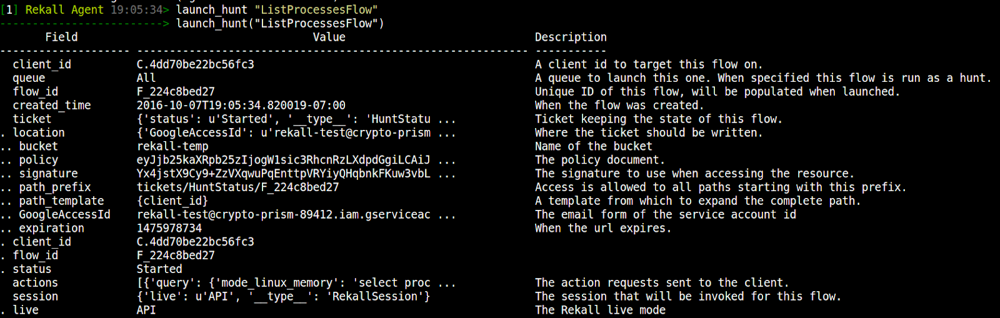
__type__: ListProcessesFlow
actions:
- __type__: CollectAction
collection:
__type__: GenericSQLiteCollection
location:
__type__: GCSSignedPolicyLocation
bucket: rekall-temp
expiration: 1475978734
path_prefix: hunts/F_224c8bed27/vfs/analysis/pslist_1475892334
path_template: '{client_id}'
policy: |
eyJjb25kaXRpb25zIjogW1sic3RhcnpdGgiLCAiJGtleSIsICJyZWthbGwtdGVtcC9odW50
cXXX
signature: |
WADjE4ckez8Y+C4uZDUFlq+XbZwN1U+l8GHIxYpHt7cXFuFyZ6dyu9v/JUCpl+ach1SPrdW
XXXXXXXXPF7w==
...
ticket:
__type__: HuntStatus
client_id: C.4dd70be22bc56fc3
flow_id: F_224c8bed27
location:
__type__: GCSSignedPolicyLocation
bucket: rekall-temp
expiration: 1475978734
path_prefix: tickets/HuntStatus/F_224c8bed27
path_template: '{client_id}'
policy: |
VDAyOjA1OjM0LjgyMjYxNiswMDowMCJ9
signature: |
0op7DJn10Lys/tX5zuKohBQmIIOUQQKi3nWXKg==
The hunt request is not very different from a regular flow request. The main differences are:
- Hunt results are stored inside the hunt namespace and not in the client namespace.
- This keeps related hunt results together in the bucket namespace (so hunts can be purged).
- The location specifies a path_template which the client interpolates, this allows multiple clients to write to the same part of the namespace without overwriting each other's collections. The client is allowed to write anywhere under the path_prefix.
- The ticket that the client writes is a HuntStatus ticket instead of a FlowStatus ticket. The HuntStatus ticket manages overall statistics for the hunt in a specific hunt collection. This is just a different batch processor which organizes information in slightly different ways.
The Rekall Agent controller does not bother merging all the results into a single output collection. Instead we maintain another very small metadata collection containing high level information about the overall hunt progress (e.g. how many machines participated, how many errors, and where each machine uploaded its result collection).
If the user wishes to export the results of the hunt, the export() plugin simply opens all the client's collections on demand and streams the result into the exported collection or into the relevant export plugin.
So to summarize we have seen that:
- Hunts are simply specially prepared flow (or job requests) which are written to a shared queue between multiple clients.
- Participation in the hunt is based on client self selection (implemented via an Efilter query).
- All results from a hunt of kept in the same part of the namespace on the filestore.
- Exporting the hunt results merges individual clients' result collections into one final result collection.
The User Interface
Rekall Agent does not have a fancy GUI at present. Instead we use standard Rekall plugins to control the system. There is no user management yet or a restful API - all operations currently require full raw level access to the bucket (using the service account's credentials).
The Rekall UI allows one to inspect the status of the hunt. For example, for our process listing hunt above, the below screenshot shows the total number of clients responded, and a list of each client's result collection.
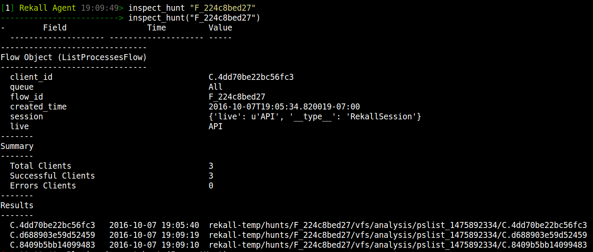
Since everything in the Rekall Agent bucket is just a file, it is sometimes easier to just list the bucket itself (the bucket can also be navigated using the Cloud Storage tools such as the Google Cloud Console and gsutil):
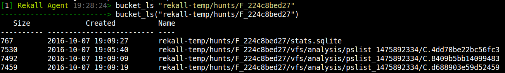
And the UI allows us to just view any file in the bucket directly. For example, in order to visualize what kind of metadata we keep about each of the clients in this hunt:
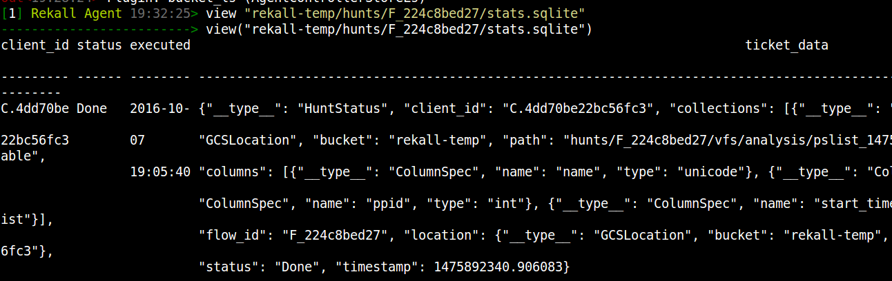
So we just keep all the hunt tickets for each client in a separate collection. The tickets contain the status message of running the flow, as well as the location where the result collection was written. The inspect_hunt plugin essentially uses data stored in this stats collection to tell us about the total clients that ran the hunt.
We can directly view the result collection from each client:
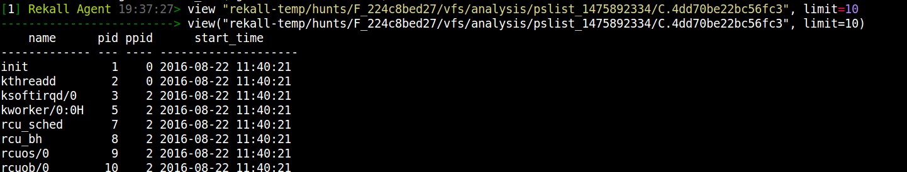
Evaluation
In order to understand how the new approach improves over GRR I examined a number of real world cases - typical of the way GRR is used.
Recursive FileFinder
It is very typical for users to recursively search the directory structure of a host, looking for files matching a certain name or timestamp. GRR has the FileFinder flow which makes issuing these requests easy, allowing users to issue Glob patterns.
in this example I am searching for the two glob expressions:
- /home/scudette/**10/*.dll
- /home/scudette/**10/*.exe
These search recursively from my home directory 10 levels deep for all files with .exe or .dll extensions.
GRR's traditional Glob algorithm is purely server based. Flows process the glob patterns into a suffix tree and then issue simple client primitives, like ListDirectory, Find etc.
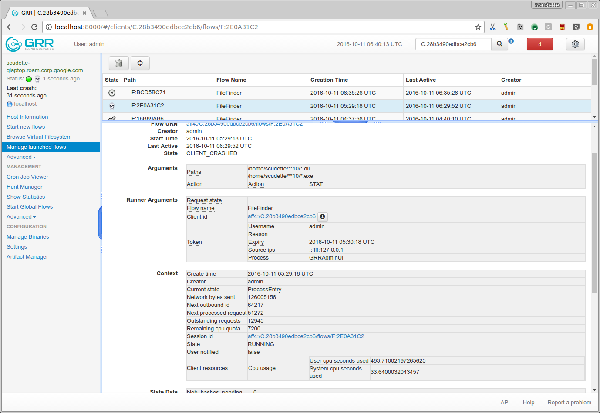
Unfortunately GRR seems to have a bug at the moment with this feature (it seems to follow symlinks so it can never complete if there is a symlink pointing back up the directory tree) and so I could not complete this flow on my machine for comparison.
Rekall on the other hand performs much better:
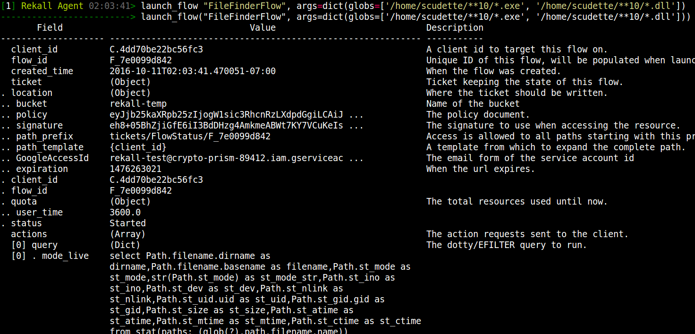
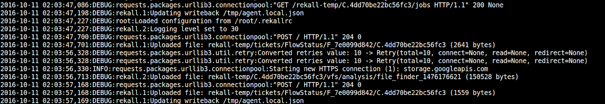
As can be seen, the result collection is 150kb (about 2060 results) and takes about 11 seconds to compute the results and a couple of seconds to upload the file.
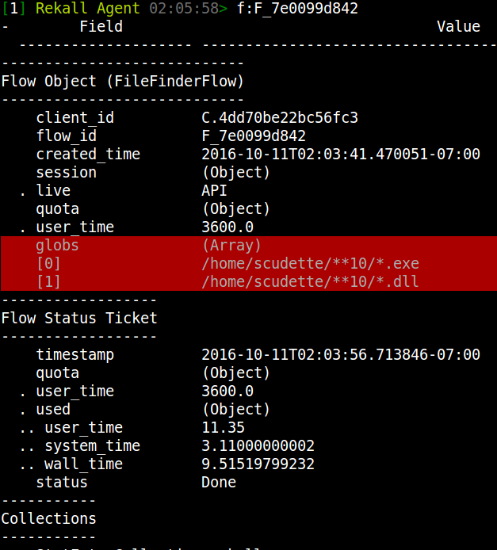
Just for comparison the Unix find command takes around 2 seconds on my system, so maybe there is some more room for optimization.
Running a hunt
Hunts are probably one of the most useful features of Rekall Agent. The ability to run a collection at the same time on all systems is important to be able to scale response. However, as noted before, the way hunts are run is inefficient and so GRR finds it difficult to scale.
To subjectively compare performance I designed the following experiment. GRR was installed on my system in the normal way with a single worker, adminUI, frontend. I also launched the GRR pool client (A tool used for benchmarking GRR by starting several separate GRR clients in the same process using different threads). The GRR pool client can be made to reuse a certificate file which means we can skip the enrollment phase and just run pre-enrolled multiple clients (Since Rekall Agent does not really have an enrollment workflow we can not compare the tools on this function). This essentially simulates a large deployment.
I started the GRR pool client with 100 separate client threads. I changed the poll interval to every 5 seconds in order to get the clients to be as responsive as possible (default is poll every 10 minutes). I then also changed the clients' foreman poll to 5 seconds (default is 30 minutes) to allow clients to pick up the hunt as quickly as possible.
For a hunt I chose a very simple and cheap action: List the /bin/ directory (FileFinder flow with Stat action of the glob /bin/*). On my system the /bin/ directory contains 164 files and we are only listing them (the equivalent of ls -l /bin/*).
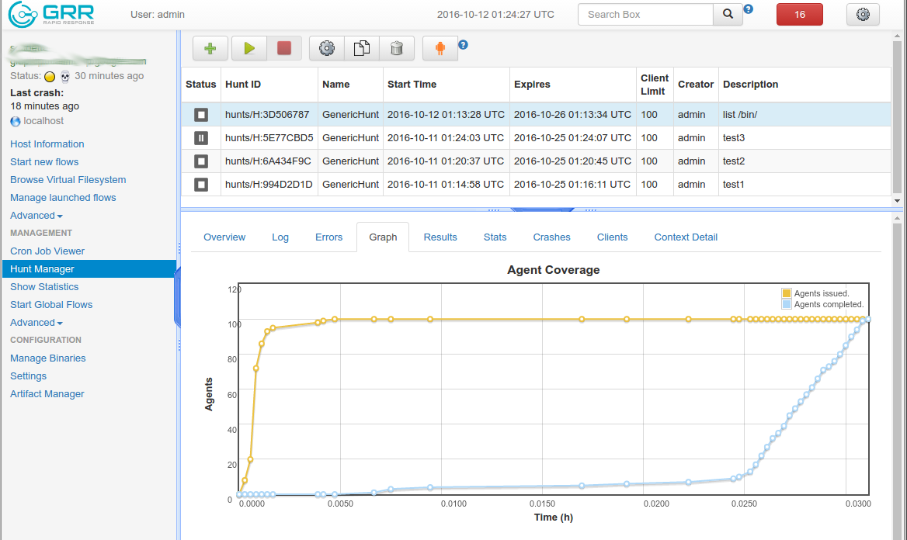
The total time for all 100 clients to complete was about 1 minute and 4 seconds.
Testing Rekall
I tested Rekall in the same way. First I started the Rekall pool client with 100 threads and waiting a few minutes until the Startup process was complete. The agent worker was not running automatically. I then created a new hunt:
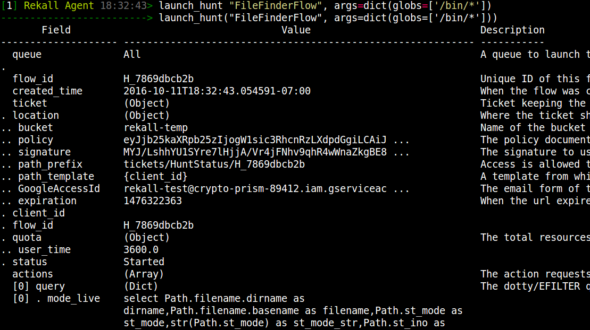
Note that as soon as this hunt was posted all clients immediately executed the hunt (Rekall does not use a hunt client rate). I waited a short time and then ran the agent worker to process the hunt status batch job. Rekall's hunt processing essentially just maintains metadata about the hunt (e.g. how many clients participated) but it is not critical to the hunt processing. The hunt is in fact complete as soon as the clients have uploaded their results.
However running the processor by hand demonstrates the worst case performance - all 100 hunt notifications are pending and should be processed at once. The processor took 4 seconds to process all the hunt notifications (it should be noted that all network traffic goes to the cloud so network latency is included in these times).
I then used Rekall's inspect_hunt plugin to plot the graph of client recruitment (similar to GRR's UI above):
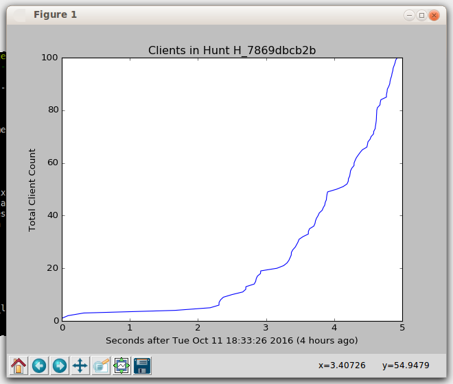
As can be seen in the above graph, all clients completed their hunt in a little under 5 seconds (which was their maximum poll time). This makes sense since there is no server side code running to introduce client processing latency, so each client is operating independently from other clients.
Discussion
Although the Rekall Agent is not yet as featureful as GRR, it actually demonstrate some excellent advancements. In the following I discuss how the current architecture addresses the goals I set out to achieve.
No part of the system should be in the critical path
We define the critical path as the connection between the client and server. Unlike GRR, the Rekall Agent Worker (batch processor) is not absolutely required to run. Of course, we assume that the Google Cloud Storage infrastructure continues to operate as a general service, even under the load we exert on it.
Barring a major Google outage in a global service designed to serve millions of customers, and having clear SLAs, the Rekall Agent clients are assured to never receive any load related errors (e.g. HTTP 500 errors). This in itself is a major improvement to GRR.
Even if the Rekall Agent batch processing jobs do not work, the client's FlowStatus tickets are still stored in the bucket and will be processed as soon as the batch services are restored. In fact, the Rekall Agent UI is aware of this possibility and marks the flow with a (*) to indicate post processing has not completed. The below screenshot was taken after a flow was scheduled for a client, but the batch processor was not running. As soon as the client completes the flow it uploads a Done ticket and the UI notes that the flow is complete but not yet preprocessed:
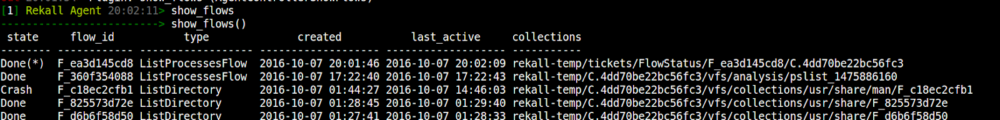
Note that in this case the UI indicates the location of the client's ticket (which contains the final status and the list of result collections) so the user can still manually read the results if needed. The FlowStatus batch job simply maintains high level flow related statistics and it is not absolutely essential to the operation of the system.
We have also previously seen that when a hunt is issued all clients immediately respond to the hunt because they all read the same jobs file. Clients are then able to upload their results as soon as they complete executing the flow. No part of the system is in the critical path between client and server and clients should never receive a load related 500 error.
The system should be easier to deploy at any scale
Whether the Rekall Agent is deployed to service few or many thousands of clients, the deployment procedure is exactly the same. The administrator simply creates a new bucket and prepares a new configuration file pointing the client at the new bucket. Depending on how much post-processing is required, the administrator can increase or decrease the capacity of the batch processor itself (but since typically Rekall batch processors only deal with metadata, not much capacity is required in the first place).
There is no need to deal with load balancing, data stores or high availability setup. The system transparently scales to whatever level is needed. SLAs are managed by the cloud provider.
The system should be able to do what users want from it
Users sometimes want to take complex operations which produce a lot of data, such as a complete recursive directory listing of the entire system. Users sometimes want to make a timeline with Plaso or Timesketch, or even export data to elasticsearch. The current GRR architecture does not allow this, but the Rekall Agent does. Consider the following operation which recursively lists every file on my system:
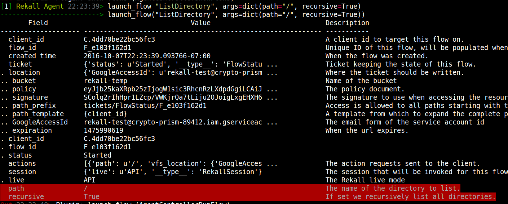
On my machine, running this flow takes around 4 minutes. This is the output with debugging enabled:
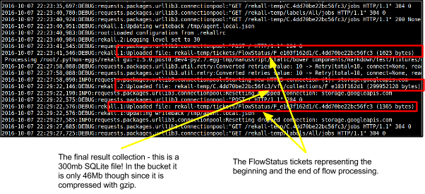
The final result collection is a 300mb SQLite file containing around 1.6 million rows of individual file stat() information. However, Rekall stores it in the bucket as a single gzipped file which only takes around 46Mb of cloud storage. If a user wishes to export this file to Plaso they may now simply download the file locally, and load it into Plaso (or another tool as required).
The Rekall console UI can also use this file to display the client's Virtual File System with the vfs_ls() plugin. This is a simple file/directory navigator similar to that presented by GRR. The Rekall vfs_ls plugin simply queries the result collection directly.
As the debug messages reveal, Rekall queries the bucket to check if the collection is modified, and if it is not (i.e. the HTTP response status is 304 - not modified) it simply uses its local cached copy. This shows that even though the collection is very large, since the file is never updated once it has been written, the Rekall console can remain very responsive (Query served within 300ms after the first download) - simply because it is easy and efficient to cache files:
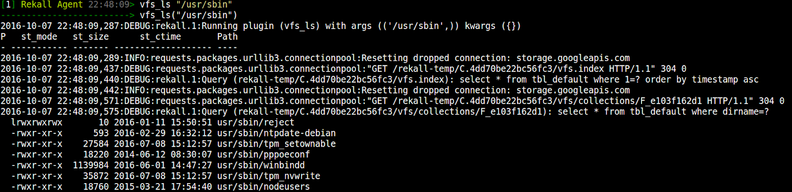
Note that this type of operation (Creating a full timeline of a remote system) is not currently possible in GRR because GRR is too slow and the load on the database is too large for such a flow to complete in a reasonable time.
The system should be simple
At the end of the day the Rekall Agent system just deals with simple files. The Rekall Console UI allows one to list and view any file within the bucket. If the file is a collection, the UI just displays the tabular output (which can be filtered in arbitrary ways using an Efilter query). For example, we can simply list all the files inside the client's namespace using the bucket_ls plugin:
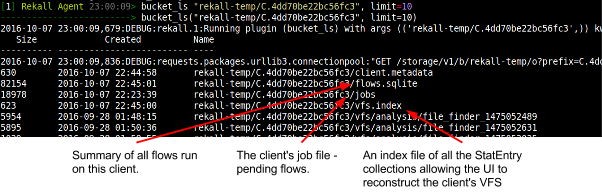
We can also just view every one of these files. For example, let's examine the client's metadata:
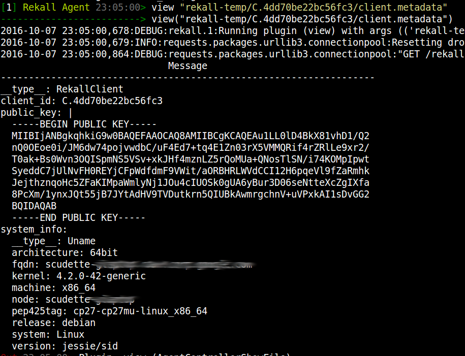
The user can also just export all the files from the bucket (using any cloud tool) and examine them with the SQLite binary itself - there is no magic in this system, everything really is a file.
The system should avoid copying data needlessly as much as possible
In Rekall the client agent is responsible for creating and uploading the result collections. The client uploads the collection directly into the final resting place as often as possible. Although the system does have a facility for running post processing on the uploaded collections the system itself avoids moving or copying the actual bulk data from its upload location. Rather, the Rekall batch processing system maintains metadata about the uploaded collections and just uses it directly.
Note in particular the when exporting data from a hunt, the export plugin will merge the results from each client into the export directory. Unlike GRR, the Rekall worker does not actually look at the results from clients, the results are only merged at export time. This means that post processors do not need to manipulate a lot of data - instead they just maintain metadata about all the result collections.